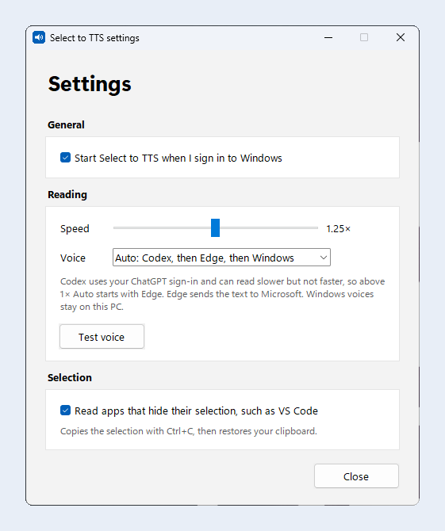

What it does
Works in every app
Drag or double-click to select text in a browser, Notepad, VS Code, and most other apps. A small button shows up next to the selection, and it never takes focus from the app you're in.
Your subscription's voice
Reads with the Codex realtime voice from your ChatGPT sign-in. You don't need an API key and there's no extra bill.
Six languages, auto-detected
Hebrew, English, Arabic, Russian, Spanish, and French. Auto picks the language from the text, or you can choose one from the menu.
Reading speed
Set the speed from 0.5× to 2× in Settings. Changes apply to the next read.
Always has a voice
If Codex can't speak, Edge neural voices take over, then the offline Windows voices. You can also pin it to one engine, and "Windows only" never sends text off your PC.
Starts with Windows
One checkbox in Settings. It lives in the tray, and you can open Settings from the tray icon or by starting the app again.
Get started
- Download the installer and run it. It installs for your user only and needs no admin rights.
The app isn't code-signed yet, so Windows SmartScreen may warn you. Choose More info, then Run anyway. - For the ChatGPT voice, install the Codex CLI and sign in once with
codex login. Without it, the app uses Edge and Windows voices. - Select some text anywhere and press ▶. Press ■ to stop.

Voices
| Engine | Needs | Speed | Where your text goes |
|---|---|---|---|
| Codex realtime | Codex CLI signed in with ChatGPT | 0.5× to 1×. Above 1×, Auto starts with Edge | OpenAI, through your Codex sign-in |
| Edge neural | Internet | 0.5× to 2× | Microsoft's Edge read-aloud service |
| Windows | Nothing. It's built in | 0.5× to 2× | Stays on your PC |
Good to know
Experimental Codex voice
Codex's realtime API is marked experimental. If an update breaks it, the app falls back to Edge on its own.
Your clipboard is safe
Some apps, such as VS Code, hide their selection. For those the app borrows Ctrl+C and then puts your clipboard back exactly as it was. You can turn this off.
Password fields are never read
It also stays out of terminal windows, where Ctrl+C would interrupt a running command.
Uninstall
Use Settings > Apps. This removes the app and its sign-in entry. Your preferences stay in %APPDATA%\select-to-tts.